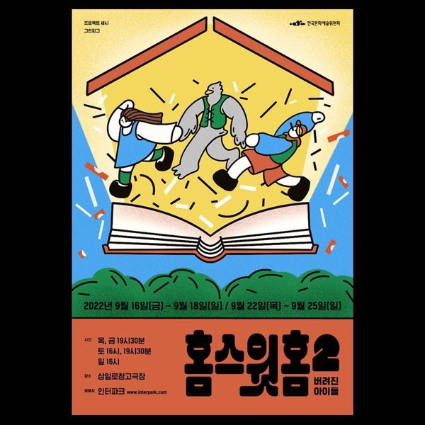

부모에게 버려져 숲속에서 홀로 오빠를 기다리던 그레텔, 공동체에서 쫓겨나 떠돌던 미운 오리 새끼, 제페토 할아버지를 찾아 길을 떠난 피노키오. 셋은 서로가 버려지고 환영받지 못한 존재라는 공통점을 발견하고, 작가가 적은 대로 이야기를 이어 가려다 의문의 인물을 만난다. 버려진 아이들이 학습된 혐오를 다른 대상에게 퍼뜨리는 모습과 그것을 넘어서는 과정을 통해, 당연하게 여겨 온 동화 속 세계를 뒤집어 본다.
2022.9.16–25 / 삼일로창고극장
이전: 〈누구와 무엇〉 | 다음: 〈악연-스무 번째 생일 소원〉
아카이브로 돌아가기 | 아무 작품이나
발행일 2026.11.9